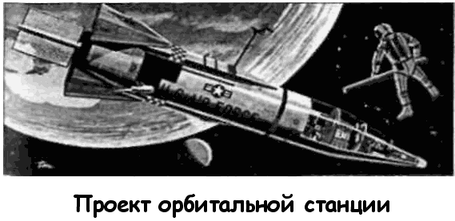
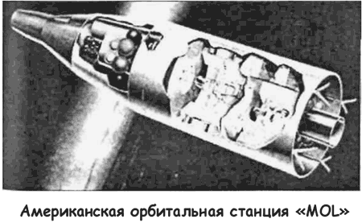
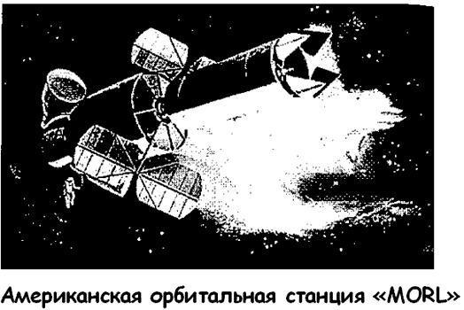
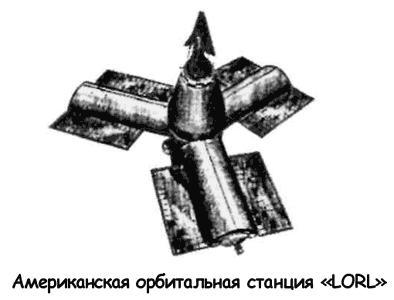
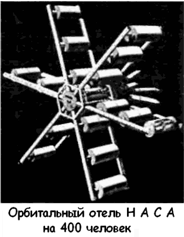

Американские орбитальные станции
Концептуальные разработки немецких специалистов послужили основой для серии проектов орбитальных станций, разрабатываемых в рамках самых различных космических программ.
В 1954 году на Пятом международном конгрессе Федерации Астронавтики обсуждался проект четырехместной маневрирующей станции, служащей в качестве промежуточной базы для межпланетных экспедиций. Этот проект разработал американец Крафт Эрике.
Через четыре года его проект под названием «Передовой пост» («Outpost») был возрожден к жизни как возможный ответ на запуск первого советского спутника.

В качестве орбитальной станции Эрике предложил использовать межконтинентальную ракету «Атлас-Д», доработанную фирмой «Конвейр». В то время это была самая большая американская ракета: длина — 22,8 метра, диаметр — 3 метра.
Такой наивный проект, разумеется, не мог найти поддержки, однако по своим параметрам он уже напоминал более позднюю концепцию орбитальной станции, которую ныне принято считать традиционной, — орбитальная станция, согласно этой концепции, является частью ракеты-носителя и ее габариты определяются, исходя из габаритов ракеты.
Одним из наиболее продуманных проектов того времени является американская орбитальная станция «МОЛ» («MOL» — сокращение от «Manned Orbiting Laboratory»), которую разрабатывали американские ВВС в качестве одного из элементов своей амбициозной космической программы.
В июне 1959 года эскизный проект станции «МОЛ» был утвержден как основа для конкурсной разработки орбитальной станции по программе «Джемини». При этом предполагалось, что станция будет собираться из трех частей: основного блока, корабля «Джемини» с экипажем и возвращаемой капсулы «Джемини». Для осуществления пилотируемых маневров можно было пристыковать к основному блоку двигательную установку одного из промежуточных блоков ракеты «Титан-3».
Помимо чисто военных задач (наблюдение за территорией противника, осмотр и перехват вражеских спутников) долговременная обитаемая станция «МОЛ» нацелена и на научные задачи, как то: изучение длительного влияния невесомости на человеческий организм, апробация замкнутой системы жизнеобеспечения, испытания двигательных установок нового типа. 10 декабря 1963 года министр обороны Роберт Макнамара объявил о закрытии программы создания космического самолета с воздушным стартом «Дайна-Сор» в пользу программы создания долговременной станции «МОЛ». По этой программе между министерством обороны и НАСА заключен соответствующий договор.
Таким образом проект получил новый толчок, и в июне 1964 года к программе создания станции подключаются три фирмы: «Дуглас», «Дженерал Электрик» и «Мартин». Срок запуска станции определен на 1967–1968 годы.
Впрочем, у проекта нашлись серьезные противники. Так, сенатор Клинтон Р. Андерсон, возглавлявший Комитет по аэронавтике и космонавтике, направил президенту Линдону Джонсону письмо, в котором призвал объединить программы «МОЛ» и «Аполлон» с целью экономии средств. Андерсон уверял, что на базе задела по орбитальным модулям «Аполлон» можно спроектировать и собрать полноценную долговременную станцию. В его словах был свой резон, однако Джонсон предпочел поддержать министерство обороны, выделив 1,5 миллиарда долларов на проект «МОЛ».
В 1965 году проект станции «МОЛ» в целом был готов.
Долговременная орбитальная станция «МОЛ» представляла собой герметичный цилиндр с габаритами: полная длина — 12,7 метра, максимальный диаметр — 3 метра, обитаемый объем — 11,3 м?, полная масса — 8,62 тонны. Состав экипажа — 2 человека. Расчетный срок эксплуатации — 40 дней. Двигатель маневрирования работает на твердом топливе, общее время работы — 255 секунд. Снабжение электропитанием — топливные элементы и панели солнечной батареи.
В марте 1966 года на авиаракетной базе Ванденберг Западного испытательного полигона началось строительство стартовой площадки № 6 для ракеты «Титан-ЗС» («Titan ЗС»), которая должна была вывести станцию на орбиту.
В феврале 1967 года был определен основной подрядчик по изготовлению станции. Им оказалась фирма «Дуглас». В то же время НАСА передало ВВС капсулу «Джемини-6» и другое оборудование для подготовки будущих экипажей «МОЛ».
Казалось бы, очень удачный год. Однако именно 1967 год стал критическим для проекта «МОЛ». Выяснилось, что конструкторы не укладываются в весовые ограничения. Пришлось в срочном порядке думать о модернизации ракеты «Титан», увеличении ее грузоподъемности за счет навесных ускорителей. На обсуждение и поиск оптимального решения ушло целых восемь месяцев, в результате чего запуск был отложен на 1970 год, а общая стоимость проекта возросла с 1,5 до 2,2 миллиарда долларов.
В марте 1968 года был закончен и отправлен на статические испытания основной блок будущей станции «МОЛ», однако в течение года было принято решение о полном сворачивании всех работ по программе. Ликвидация программы создания долговременной станции «МОЛ» стала следствием общего сокращения расходов на пилотируемую космонавтику, связанного с утратой мобилизующих ориентиров после высадки экипажа «Аполлона-11» на Луну и обострением политической ситуации на Земле.
Соответственно были отменены и другие американские проекты долговременных орбитальных станций, которые тем или иным образом были связаны с успешным развитием и завершением программы «МОЛ».


Так, был закрыт и забыт проект научно-исследовательской станции «МОРЛ» («MORL» — сокращение от «Manned Orbital Research Laboratory»), разработкой которой фирмы «Боинг» и «Дуглас» занимались с 1964 года. Эта станция диаметром 6,8 метра, длиной 12,6 метра и массой 13,5 тонны, с экипажем из четырех человек, должна была выводиться на орбиту ракетой-носителем «Сатурн-1Б». За сто дней пребывания на орбите экипаж станции мог бы выполнить обширную программу астрономических и медико-биологических исследований. По завершении программы астронавты должны были вернуться на Землю в возвращаемой капсуле «Джемини» или «Аполлон», отправляемой на орбиту вместе с «МОРЛ». Интересно, что на этой станции планировалось разместить двухместную центрифугу, предназначенную для поддержания нормальной физической формы у членов экипажа.
В более поздних вариантах проекта «МОРЛ» на станции предполагали разместить космический телескоп диаметром 4 метра и длиной 15 метров, а в 1965 году Лаборатория космической техники фирмы «Дуглас» выдвинула проект марсианской экспедиции, в котором станция «МОРЛ» выступала как межпланетный корабль, запускаемый к Марсу разгонным блоком Saturn MLV–V-1.
Другим проектом, пострадавшим в результате ликвидации программы «МОЛ», был проект большой научно-исследовательской станции «ЛОРЛ» («LORL» — сокращение от «Large Orbiting Research Laboratory»), которая оставалась как развитие «МОЛ» на более позднем этапе. Станция, рассчитанная на экипаж из 18 человек (!!!) и срок службы не менее пяти лет, должна была собираться из модулей, доставляемых на орбиту тяжелыми ракетами «Сатурн-5».
Имелись и другие проекты орбитальных станций, создаваемые в развитие программ «Джемини», Аполлон» и «Сатурн». Все они, однако, были отвергнуты по банальной причине недостатка финансирования. НАСА вновь пришлось экономить и сдерживать свои аппетиты. Поэтому из целого списка проектов американскому космическому агентству снова пришлось выбирать что-то одно. 14 мая 1973 года на орбиту высотой 434 километра в перигее и 437 километров в апогее была выведена первая американская станция «Скайлэб» («Skylab» — сокращение от «Sky Laboratory») весом 77 тонн. Основной блок станции был создан на базе третьей ступени ракеты-носителя «Сатурн-5», оставшейся невостребованной в лунной программе.


В качестве транспортного корабля снабжения использовался корабль «Аполлон».
Экипажи, работавшие на станции, столкнулись с рядом серьезнейших проблем, поэтому состоялось всего лишь три экспедиции на нее (максимальное время пребывания — 84 дня). 9 июля 1979 года американская станция «Скайлэб» прекратила свое существование, упав в Индийский океан.